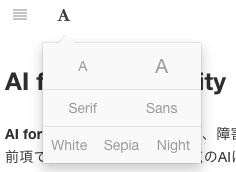

聴覚障害者に向けた情報技術入門
本資料のHTMLソース、およびPDF版は以下のWebページで公開している。
HTMLソース
PDF版（別タブ閲覧推奨）
また、本ページは上部のAアイコンから閲覧モードを調整できるため、必要に応じて調整してほしい。

はじめに
本資料は大学に入学したばかりの新大学一年生を対象として作成したものである。
とりわけ聴覚障害者が利用することを想定して構成しているため、聴覚障害に関連したテーマを意識して取り上げながら情報技術を解説している。
なお、知識・理論の説明は最小限にとどめ、情報技術の基本的な要素のみの説明を行う。
そのため、本資料で取り扱う内容は一般的な情報科学技術（コンピュータサイエンス）ではなく、情報技術（ITリテラシー）が中心となる。
続いて、本資料のスコープを説明する。ここでは、一般的な大学１年生に求められる情報リテラシーの取得を目的とし、情報の扱い方を紹介する。
具体的には、情報処理学会著『一般情報教育の知識体系（GEBOK2017.1）』を参考に、以下のトピックスに分けて紹介する。
- 情報を正しく収集する
- 情報を適切に分析し理解する
- 情報をわかりやすく発信する
- 情報アクセシビリティを意識した資料を作成する
- 情報技術を活用した情報獲得手段（AIツールの活用）を知る
このうち、1~3は大学1年生に求められるITリテラシー（アカデミックICTリテラシー）、4はユニバーサルアクセス、5は障害者を支える最新のIT技術（人工知能とデータ科学）に該当する。
これらのトピックスに触れることで、読者が情報を活用するための足がかりとなれば、本資料の目的は十分達成されたことになる。
なお、本資料における参考文献は、自宅で利用することを想定し、Web上で資料が閲覧できるものを中心に選定した。